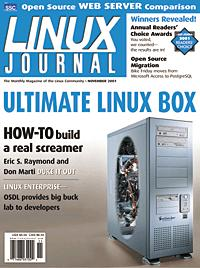

Shutdown Archive web server
Search:
Linux Journal
Issue #91/November 2001

Features
Open-Source Web Servers: Performance on Carrier-Class Linux Platform
by Ibrahim F. Haddad
Apache, Jigsaw and Tomcat compete for benchmark glory.
Moving to PostgreSQL's Object-Relational DBMS
by Chris Volpe
Cleaning house—moving to PostgreSQL one step at a time.
The Scalable Test Platform
by Nathan Dabney
OSDL offers open-source developers an invaluable resource.
Indepth
More Than Word(s)
by Jan Schaumann
Dealing with pesky .docs with some lean and clean word processing alternatives.
Getting Your Palm to Talk to a Linux Box
by Johan Coppieters and Kevin Velghe
Linux Box and Palm—sure they're different but that doesn't mean they shouldn't talk to each other.
Building the Ultimate Linux Box
by Eric S. Raymond
Teaming up with hardware experts to build a couple of dream Linux machines.
2001 Readers' Choice Awards
by Heather Mead
The results are in—read 'em if you dare.
Toolbox
At the Forge
Data Modeling with DODS
by Reuven M. Lerner
Cooking with Linux
Enterprise—Help for Sys Admins
by Marcel Gagné
Paranoid Penguin
Detecting Suspect Traffic
by Michael Rash
Linux in Education Implementing a Research Knowledge Base
by Michael Yuan
GFX XFree86 4.1.0 and ATI Radeon
by Robin Rowe
Columns
Focus on Software
Applications for Your Enterprise
by David A. Bandel
Focus on Embedded Systems
Embedded Linux: A Timely New Book
by Rick Lehrbaum
Linux for Suits
Original and Instant
by Doc Searls
Original and Instant
Geek Law
More on Trademarks
by Lawrence Rosen
Departments
Letters
upFRONT
From the Editor
Best of Technical Support
New Products
Archive Index
Shutdown Archive web server
Search:
Copyright © 1994 - 2018
Linux Journal
. All rights reserved.